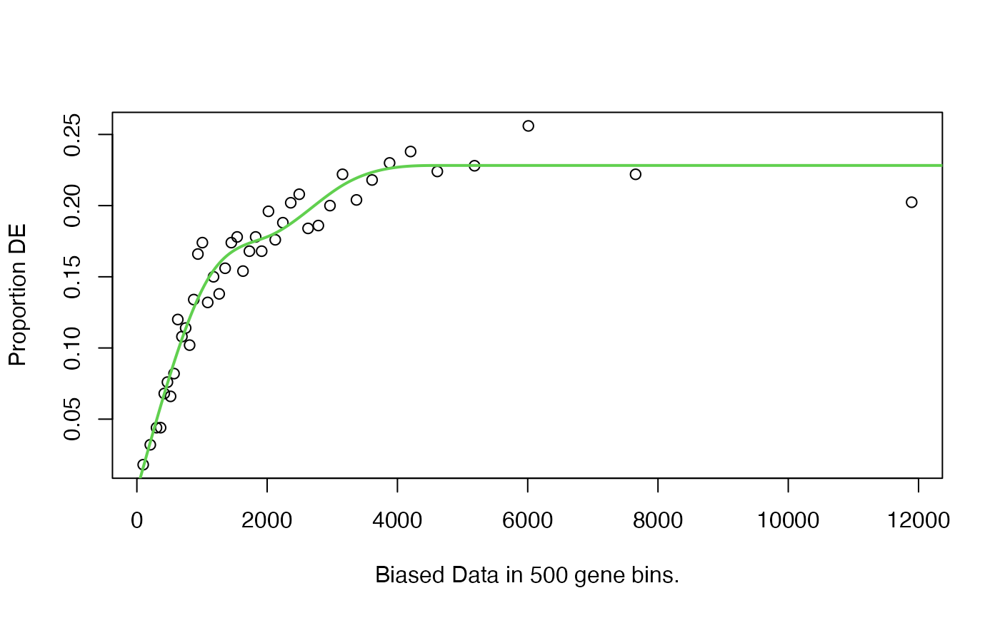

Does selection-unbiased testing for category enrichment amongst differentially expressed (DE) genes for RNA-seq data. By default, tests gene ontology (GO) categories, but any categories may be tested.
Usage
goseq(
pwf,
genome,
id,
gene2cat = NULL,
test.cats = c("GO:CC", "GO:BP", "GO:MF"),
method = "Wallenius",
repcnt = 2000,
use_genes_without_cat = FALSE
)Arguments
- pwf
An object containing gene names, DE calls, the probability weighting function. Usually generated by
nullp.- genome
A string identifying the genome that
genesrefer to. For a list of supported organisms runsupportedGenomes.- id
A string identifying the gene identifier used by
genes. For a list of supported gene IDs runsupportedGeneIDs.- gene2cat
A data frame with two columns containing the mapping between genes and the categories of interest. Alternatively, a list where the names are genes and each entry is a vector containing GO categories associated with that gene (this is the output produced by
getgo). If set toNULLgoseq attempts to fetch GO categories automatically usinggetgo.- test.cats
A vector specifying which categories to test for over representation amongst DE genes. See details for allowed options.
- method
The method to use to calculate the unbiased category enrichment scores. Valid options are "Wallenius", "Sampling" & "Hypergeometric". "Hypergeometric" and "Sampling" should almost never be used (see details).
- repcnt
Number of random samples to be calculated when random sampling is used. Ignored unless
method="Sampling".- use_genes_without_cat
A boolean to indicate whether genes without a category should still be used. For example, a large number of gene may have no GO term annotated. If this option is set to FALSE, those genes will be ignored in the calculation of p-values (default behaviour). If this option is set to TRUE, then these genes will count towards the total number of genes outside the category being tested (default behaviour prior to version 1.15.2).
Value
goseq returns a data frame with several columns. The first column gives the name of the category, the second gives the p-value for the associated category being over represented amongst DE genes. The third column gives the p-value for the associated category being under represented amongst DE genes. The p-values have not been corrected for multiple hypothesis testing. The fourth and fifth columns give the number of differentially expressed genes in the category and total genes in the category respectively. If any of the categories was a GO term, there will be two additional columns for the GO term and its ontology.
Details
The pwf argument is almost always the output of the function
nullp. This is a data frame with 3 columns, named "DEgenes",
"bias.data" and "pwf" with the rownames set to the gene names. Each row
corresponds to a gene with the DEgenes column specifying if the gene is DE
(1 for DE, 0 for not DE), the bias.data column giving the numeric value of
the DE bias being accounted for (usually the gene length or number of
counts) and the pwf column giving the genes value on the probability
weighting function.
goseq obtains length data from UCSC and GO mappings from the organism
packages (see link{getgo} and getlength for details).
If your data is in an unsupported format you will need to obtain the GO
category mapping and supply them to the goseq function using the
gene2cat argument.
To use your own gene to category mapping with goseq, use the
gene2cat argument. This argument takes a data.frame, with one column
containing gene IDs and the other containing the associated categories. As
the mapping from gene <-> category is in general many to many there will be
multiple rows containing the same gene identifier. Alternatively,
gene2cat can take a list, where the names are the genes and the
entries are the GO categories associated with the genes. This is the format
produced by the getgo function and is more space efficient
than the data.frame representation.
If gene2cat is left as NULL, goseq attempts to use
getgo to fetch GO category to gene identifier mappings.
The PWF is usually calculated using the nullp function to
correct for length bias. However, goseq will work with any vector of
weights. Any bias can be accounted for so long as a weight for each gene is
supplied using this argument. NAs are allowed in the "pwf" and
"bias.data" columns of the PWF data frame (these usually occur as a result
of missing length data for some genes). Any entry which is NA is set
to the weighting of the median gene.
Valid options for the test.cats argument are any combination of
"GO:CC", "GO:BP", "GO:MF" & "KEGG". The three GO terms refer to the
Cellular Component, Biological Process and Molecular Function respectively.
"KEGG" refers to KEGG pathways.
The three methods, "Wallenius", "Sampling" & "Hypergeometric", calculate the p-values as follows.
"Wallenius" approximates the true distribution of numbers of members of a category amongst DE genes by the Wallenius non-central hypergeometric distribution. This distribution assumes that within a category all genes have the same probability of being chosen. Therefore, this approximation works best when the range in probabilities obtained by the probability weighting function is small. "Wallenius" is the recommended method for calculating p-values.
"Sampling" uses random sampling to approximate the true distribution and
uses it to calculate the p-values for over (and under) representation of
categories. In practice, its use quickly becomes computationally prohibitive
because repcnt would need to be set very high for most applications.
CAUTION: "Hypergeometric" should NEVER be used for producing results for biological interpretation. If there is genuinely no bias in power to detect DE in your experiment, the PWF will reflect this and the other methods will produce accurate results.
"Hypergeometric" assumes there is no bias in power to detect differential expression at all and calculates the p-values using a standard hypergeometric distribution. Useful if you wish to test the effect of selection bias on your results.
References
Young, M. D., Wakefield, M. J., Smyth, G. K., Oshlack, A. (2010) Gene ontology analysis for RNA-seq: accounting for selection bias Genome Biology Date: Feb 2010 Vol: 11 Issue: 2 Pages: R14
Author
Matthew D. Young myoung@wehi.edu.au
Examples
data(genes)
pwf <- nullp(genes,'hg19','ensGene')
#> Loading hg19 length data...
#> Warning: initial point very close to some inequality constraints

pvals <- goseq(pwf,'hg19','ensGene')
#> Fetching GO annotations...
#> For 9343 genes, we could not find any categories. These genes will be excluded.
#> To force their use, please run with use_genes_without_cat=TRUE (see documentation).
#> This was the default behavior for version 1.15.1 and earlier.
#> Calculating the p-values...
#> 'select()' returned 1:1 mapping between keys and columns
head(pvals)
#> category over_represented_pvalue under_represented_pvalue numDEInCat
#> 2490 GO:0005737 2.559737e-10 1 2121
#> 123 GO:0000278 2.132274e-08 1 233
#> 9061 GO:0035556 3.612206e-08 1 538
#> 3165 GO:0006793 1.365907e-07 1 519
#> 12646 GO:0051301 5.097381e-07 1 168
#> 17061 GO:0110165 6.456702e-07 1 2773
#> numInCat term ontology
#> 2490 9352 cytoplasm CC
#> 123 787 mitotic cell cycle BP
#> 9061 2029 intracellular signal transduction BP
#> 3165 2013 phosphorus metabolic process BP
#> 12646 557 cell division BP
#> 17061 12873 cellular anatomical entity CC